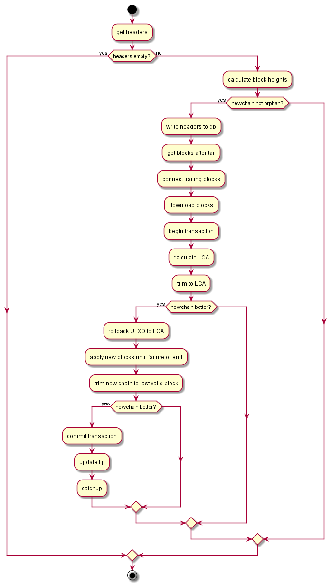

Bob the Blockchain
This is now close to the end of the code and it is the highest component in the data model. Bob's job is to identify the best valid blockchain and keep the UTXO set synchronized to it. Working with the other actors, Bob knows when a peer has a block hash that he doesn't know about and can request the recent headers from this peer has. Also, once his satisfied with the block headers, Bob can request for the actual block contents.
Bob is a very cautious man and he will check everything that people tell him, but he's also a forgiving man and he will accept all the blocks that are valid even if a peer tries to sneak in a few invalid block here and there.
When he synchronizes (catches up) with a peer, Bob follows the checklist:
- get headers (async). Bob gives his most recent block header (the tip) and asks the peer if he has any blocks after that one If the peer says no, Bob is done. If he gets some blocks, Bob will connect them with the ones he knows already. If they can't be connected because he never heard the block that supposedly precedes the chain that he received, Bob concludes that the chain is orphaned and not of concern to him. If that chain eventually gets connected, he will be made aware of it when he get the connecting block.
- extend the new chain if possible. Bob consults his database to see if he has received headers that follows the new chain because, at times, blocks are given out of order
- compute heights. Now that the block connects somewhere to a known block, Bob can update the heights of all the blocks that he received. Starting from the previous block that he knows about, Bob increments the height and sets to the first block of the new chain and so on so forth.
- store headers into db. Bob takes these headers and writes them to his database. They will never be removed from there.
- compare POW. First he finds out the lowest common ancestor between his best chain and the chain he received. If the chain he received extends his current chain, it's the best case because the LCA will be his tip but it doesn't matter to Bob. He compares the work from both chains. Knowing that both chains are equal from the LCA to the genesis block, Bob only has to compare the POW between the LCA and both tips. If the new chain is no better than the old one, there is no need to continue.
- (connect with orphans)
- download blocks (async). Bob looks at the blocks he already has downloaded and says to himself - well no need to download these again! Bob splits the rest evenly in several groups and asks his peers to download them for him. This task is done in parallel while he sits patiently. During that time, if a download fails the blocks get reassigned to a different peer. So, eventually Bob gets his blocks or the retry limit got reached. In the later case, Bob gives up and will try another time. The catchup fails.
- rollback utxo to LCA beween main and new fork. However, if Bob got his blocks he now has to determine how many of these blocks are good. He creates a new in memory UTXO set on top of the existing db and rolls back all the blocks back to the LCA. Then he dilligently checks the blocks of the new chain and applies their transactions until the end or the first failure. If he made it to the end, the new chain was all good. If not, he has a partially good new chain.
- compare pow between current chain and new chain. Bob trims the new chain down to the first failure if there was one and compares the POW of the revised chain with his own chain. The new chain was trimmed so even if it was better earlier, it may not be as good anymore.
- if better, commit tempdb, update tip. Finally, if the new chain is still better than his chain, Bob commits the in memory UTXO to the database and updates his tip. Otherwise, he simply drops the in memory UTXO and everything is forgotten.
Here's a big flowchart

1:
|
module Blockchain |
And in code:
1: 2: 3: 4: 5: 6: 7: 8: 9: 10: 11: |
let calculateChainHeights(newHeaders: BlockHeaderList): BlockChainFragment option = let blockchain = fnBlockchain() let hashOfPrevNewHeader = Seq.tryPick Some newHeaders |> Option.map (fun bh -> bh.PrevHash) |?| tip.Hash let prevNewHeader = Db.readHeader hashOfPrevNewHeader if prevNewHeader.Hash = zeroHash then logger.DebugF "Orphaned branch %A" newHeaders None else newHeaders |> Seq.iteri (fun i newHeader -> newHeader.Height <- prevNewHeader.Height + i + 1) (prevNewHeader :: newHeaders ) |> List.rev |> Some |
To calculate the lowest common ancestor, I use the fact that I know the height of the nodes. It makes the determination much simpler. I find the minimum height between the two nodes and move from the deeper node up until I reach a node that has the same height. Now I'm working with two nodes that are at the same height but potentially in different branches of the tree. I compare the two nodes and move up from both nodes simultaneously until I reach the same ancestor.
1: 2: 3: 4: 5: 6: 7: 8: |
let calculateLowestCommonAncestor (newChain: BlockChainFragment) = let blockchain = fnBlockchain() let newTip = newChain |> List.head let minHeight = min tip.Height newTip.Height let trimBlockchain = blockchain |> Seq.skip (tip.Height - minHeight) let trimNewHeaders = newChain |> Seq.skip (newTip.Height - minHeight) (Seq.zip trimBlockchain trimNewHeaders |> Seq.find (fun (a, b) -> hashCompare.Equals(a.Hash, b.Hash)) |> fst) |
Compares the POW of one chain against the current chain starting from the given node
1: 2: 3: 4: 5: |
let isBetter (lowestCommonAncestor: BlockHeader) (newChain: BlockChainFragment) = let blockchain = fnBlockchain() let mainChain = blockchain |> Seq.takeWhile (fun bh -> bh.Height <> lowestCommonAncestor.Height) |> Seq.toList let newFork = newChain |> Seq.takeWhile (fun bh -> bh.Height <> lowestCommonAncestor.Height) |> Seq.toList getWork mainChain < getWork newFork |
Fetch a set of nodes asynchrounously from the current set of peers. The function retries until it reaches the maximum
number of attempts. Between retries, only the failed downloads are retried. For instance, if a peer provides 9/10 blocks
only the 1/10 missing block is retried. Furthermore, after a failure the peer gets a malus (Bad) and can end up being removed.
In that case, the application will use a different peer. In the background, the tracker will eventually replace the bad peer too.
That takes place independently from Bob.
1: 2: 3: 4: 5: 6: 7: 8: 9: 10: 11: 12: 13: 14: 15: 16: 17: 18: 19: 20: 21: 22: 23: 24: 25: 26: 27: 28: 29: 30: 31: 32: 33: 34: 35: 36: 37: 38: 39: 40: 41: 42: 43: 44: 45: 46: 47: 48: 49: 50: 51: 52: 53: 54: 55: 56: 57: |
type BlockMap = Map<byte[], BlockHeader> // Get a list of blocks let rec asyncGetBlocks (headers: BlockHeader list) (attempsRemaining: int) = // After a block is received, check that it's among the blocks we are waiting for // If so, update the height and store it on file // Then remove it from the list of pending blocks let updatePendingBlocks (pendingBlocks: BlockMap) (block: Block, payload: byte[]) = logger.DebugF "Block received -> %s" (hashToHex block.Header.Hash) pendingBlocks.TryFind(block.Header.Hash) |> Option.iter(fun header -> block.Header.Height <- header.Height storeBlock block payload ) pendingBlocks.Remove(block.Header.Hash) async { // If we haven't reached the max number of attempts if attempsRemaining > 0 then let pendingBlocks = headers |> List.map(fun bh -> (bh.Hash, bh)) |> Map.ofList let! (peer, obs) = Async.AwaitTask(Tracker.getBlocks(pendingBlocks |> Map.keys)) // Send a getdata request and park until we get an observable of blocks let! failedBlocks = Async.AwaitTask( Observable.Return(pendingBlocks) .Concat(obs // Unlike F# scan, RX scan doesn't emit the first element (pendingBlocks) and we must manually add it .Scan(pendingBlocks, Func<BlockMap, Block * byte[], BlockMap> updatePendingBlocks) // update pending block list as we get blocks .OnErrorResumeNext(Observable.Empty())) // If we get an exception quit without error .LastOrDefaultAsync() // Fetch the last pending block list .ToTask()) // Park until we finished peer.Ready() if not failedBlocks.IsEmpty then // Some blocks remaining, it was a failure peer.Bad() logger.DebugF "Failed blocks %A" (failedBlocks |> Map.values) return! asyncGetBlocks (failedBlocks |> Map.valueList) (attempsRemaining-1) // Retry with 1 attempt fewer else logger.DebugF "GetBlocks completed" return () else raise (new IOException "GetBlocks failed") // TODO: Delete block files } let downloadBlocks (newChain: BlockChainFragment) = // Fetching blocks from peers let h = newChain |> List.filter(fun bh -> not (hasBlock bh)) // Filter the blocks that we already have // Spread blocks around 'evenly' accross connected peers let c = max Tracker.connectionCount 1 let batchSize = h.Count() / c let getdataBatchSize = max (min batchSize maxGetdataBatchSize) minGetdataBatchSize // Create an array of async work to fetch blocks let hashes = h |> List.toArray let getblocks = seq { for batch in hashes.Batch(getdataBatchSize) do yield asyncGetBlocks(batch |> Seq.toList) settings.MaxGetblockRetry } |> Seq.toArray Async.Parallel getblocks |> Async.Ignore // execute fetch blocks in parallel - park until finished |
Undo the blockchain up to a certain point
1: 2: 3: |
let rollbackTo (accessor: IUTXOAccessor) (targetBlock: BlockHeader) = let blockchain = fnBlockchain() blockchain |> Seq.takeWhile(fun bh -> bh.Hash <> targetBlock.Hash) |> Seq.map(undoBlock accessor) |> Seq.toList |
The function that drives all the checks and chains them together. Checks were discussed in the previous section.
1: 2: 3: 4: 5: 6: 7: 8: 9: 10: 11: 12: 13: 14: 15: 16: |
let checkBlock (utxoAccessor: IUTXOAccessor) (p: BlockHeader) (blocks: BlockHeader[]): Choice<BlockHeader, BlockHeader * BlockHeader> = let prevBlock = blocks.[0] let currentBlock = blocks.[1] let tempUTXO = new MempoolUTXOAccessor(utxoAccessor) maybe { do! currentBlock.PrevHash = prevBlock.Hash |> errorIfFalse "prev blockhash field does not match hash of previous block" do! checkBlockHeader currentBlock let blockContent = loadBlock currentBlock let blockContentSerialized = blockContent.ToByteArray() let blockSize = blockContentSerialized.Length // Length has to be based on serialized block and not original block do! (blockSize <= maxBlockSize) |> errorIfFalse "blocksize exceeds limit" do! checkBlockTxs tempUTXO blockContent do! updateBlockUTXO tempUTXO blockContent tempUTXO.Commit() return () } |> Option.map(fun () -> Choice1Of2 currentBlock) |?| Choice2Of2 (p, currentBlock) |
The catchup workflow
1: 2: 3: 4: 5: 6: 7: 8: 9: 10: 11: 12: 13: 14: 15: 16: 17: 18: 19: 20: 21: 22: 23: 24: 25: 26: 27: 28: 29: 30: 31: 32: 33: 34: 35: 36: 37: 38: 39: 40: 41: 42: 43: 44: 45: 46: 47: 48: 49: 50: 51: 52: 53: 54: |
let catchup (peer: IPeer) = let getHeaders(): Async<Headers> = async { try let blockchain = fnBlockchain() // Get current blockchain let gh = new GetHeaders(blockchain |> Seq.truncate 10 |> Seq.map(fun bh -> bh.Hash) |> Seq.toList, Array.zeroCreate 32) // Prepare GetHeaders request let! headers = Async.AwaitTask(Tracker.getHeaders(gh, peer)) // Send request - park until request is processed let! getHeadersResult = Async.AwaitTask(headers.FirstOrDefaultAsync().ToTask()) // Pick Headers or exception logger.DebugF "GetHeaders Results> %A %A" (peer.Target) (getHeadersResult) return getHeadersResult finally peer.Ready() } let rec catchupImpl() = try let headersMessage = getHeaders() |> Async.RunSynchronously let headers = headersMessage.Headers if not headers.IsEmpty then let newBlockchainOpt = calculateChainHeights headers newBlockchainOpt |> Option.iter (fun newBlockchainFrag -> newBlockchainFrag |> List.iter Db.writeHeaders let headersAfter = newBlockchainFrag |> List.head |> iterate (fun bh -> Db.getNextHeader bh.Hash) |> Seq.takeWhile (fun bh -> bh.Hash <> zeroHash) |> Seq.skip 1 |> Seq.toList |> List.rev let connectedNewBlockchain = headersAfter @ newBlockchainFrag let downloadBlocksAsync = connectedNewBlockchain |> List.rev |> List.tail |> downloadBlocks downloadBlocksAsync |> Async.RunSynchronously let tempUTXO = new MempoolUTXOAccessor(utxoAccessor) let lca = calculateLowestCommonAncestor connectedNewBlockchain let newBlockchain = connectedNewBlockchain |> List.takeWhile(fun bh -> bh.Hash <> lca.Hash) if isBetter lca newBlockchain then let undoTxs = rollbackTo tempUTXO lca let newBlockList = lca :: (newBlockchain |> List.rev) let lastValidBlockChoice = newBlockList |> Seq.windowed 2 |> Choice.foldM (checkBlock tempUTXO) lca let lastValidBlock = match lastValidBlockChoice with | Choice1Of2 bh -> bh | Choice2Of2 (bh, invalidBlock) -> deleteBlock invalidBlock bh let validNewBlockchain = newBlockchain |> List.skipWhile(fun bh -> bh.Hash <> lastValidBlock.Hash) if isBetter lca validNewBlockchain then logger.InfoF "New chain is better %A" headers tempUTXO.Commit() tip <- lastValidBlock Db.writeTip tip.Hash mempoolIncoming.OnNext(Revalidate (tip.Height, (undoTxs |> List.rev))) catchupImpl() ) with | ex -> logger.ErrorF "%A" ex catchupImpl() |
Command handler
Bob's commands are:
- Catchup from a given peer
- GetBlock. A remote node wants to get a block from this client
- GetHeaders. A remote node wants to get the headers from this client
- Ping. Ping is here only because it helps with acceptance testing. The system works asynchronously and it makes difficult to know when catchup completes for an external component. The test driver probes the client node by sending pings and then waits for the pong. Originally, ping/pong was directly handled by the peer but then the response was too fast and the test driver would proceed before catchup even started. By putting ping here, the request gets queued until Bob is finished with catchup.
1: 2: 3: 4: 5: 6: 7: 8: 9: 10: 11: 12: 13: 14: 15: 16: 17: 18: 19: 20: 21: 22: 23: 24: 25: 26: 27: 28: 29: 30: 31: 32: 33: 34: 35: 36: 37: |
let processCommand command = match command with | Catchup (peer, hash) -> logger.DebugF "Catchup started for peer %A" peer let blockchain = fnBlockchain() if hash = null || (Db.readHeader hash).Hash = zeroHash || not (hasBlock (Db.readHeader hash)) then catchup peer logger.DebugF "Catchup completed for peer %A" peer | GetBlock (invs, peer) -> for inv in invs do try let bh = Db.readHeader inv.Hash let block = loadBlock bh peer.OnNext(new BitcoinMessage("block", block.ToByteArray())) with | _ -> ignore() // TODO: send notfound? | GetHeaders (gh, peer) -> try let blockchain = fnBlockchain() let reqBlockchain = blockchain |> Seq.takeWhile (fun bh -> let stop = gh.Hashes |> Seq.tryFind (fun ghHash -> hashCompare.Equals(bh.Hash, ghHash)) stop.IsNone ) |> Seq.truncate 2000 |> Seq.toList |> List.rev |> List.takeWhile (fun bh -> not(hashCompare.Equals(bh.Hash, gh.HashStop))) logger.DebugF "Headers sent> %A" reqBlockchain let headers = new Headers(reqBlockchain) peer.OnNext(new BitcoinMessage("headers", headers.ToByteArray())) with | e -> logger.ErrorF "Exception %A" e | Ping (ping, peer) -> let pong = new Pong(ping.Nonce) peer.OnNext(new BitcoinMessage("pong", pong.ToByteArray())) let blockchainStart() = disposable.Add(blockchainIncoming.ObserveOn(NewThreadScheduler.Default).Subscribe(processCommand)) |
namespace System.Linq
--------------------
namespace Microsoft.FSharp.Linq
from Microsoft.FSharp.Control
namespace System.Collections
--------------------
namespace Microsoft.FSharp.Collections
type Choice<'T1,'T2> =
| Choice1Of2 of 'T1
| Choice2Of2 of 'T2
Full name: Microsoft.FSharp.Core.Choice<_,_>
--------------------
type Choice<'T1,'T2,'T3> =
| Choice1Of3 of 'T1
| Choice2Of3 of 'T2
| Choice3Of3 of 'T3
Full name: Microsoft.FSharp.Core.Choice<_,_,_>
--------------------
type Choice<'T1,'T2,'T3,'T4> =
| Choice1Of4 of 'T1
| Choice2Of4 of 'T2
| Choice3Of4 of 'T3
| Choice4Of4 of 'T4
Full name: Microsoft.FSharp.Core.Choice<_,_,_,_>
--------------------
type Choice<'T1,'T2,'T3,'T4,'T5> =
| Choice1Of5 of 'T1
| Choice2Of5 of 'T2
| Choice3Of5 of 'T3
| Choice4Of5 of 'T4
| Choice5Of5 of 'T5
Full name: Microsoft.FSharp.Core.Choice<_,_,_,_,_>
--------------------
type Choice<'T1,'T2,'T3,'T4,'T5,'T6> =
| Choice1Of6 of 'T1
| Choice2Of6 of 'T2
| Choice3Of6 of 'T3
| Choice4Of6 of 'T4
| Choice5Of6 of 'T5
| Choice6Of6 of 'T6
Full name: Microsoft.FSharp.Core.Choice<_,_,_,_,_,_>
--------------------
type Choice<'T1,'T2,'T3,'T4,'T5,'T6,'T7> =
| Choice1Of7 of 'T1
| Choice2Of7 of 'T2
| Choice3Of7 of 'T3
| Choice4Of7 of 'T4
| Choice5Of7 of 'T5
| Choice6Of7 of 'T6
| Choice7Of7 of 'T7
Full name: Microsoft.FSharp.Core.Choice<_,_,_,_,_,_,_>
from Microsoft.FSharp.Core
Full name: Blockchain.disposable
Full name: Blockchain.tip
Full name: Blockchain.fnBlockchain
Full name: Blockchain.calculateChainHeights
Full name: Microsoft.FSharp.Core.option<_>
from Microsoft.FSharp.Collections
Full name: Microsoft.FSharp.Collections.Seq.tryPick
Full name: Microsoft.FSharp.Core.Option.map
Full name: Microsoft.FSharp.Collections.Seq.iteri
type List<'T> =
new : unit -> List<'T> + 2 overloads
member Add : item:'T -> unit
member AddRange : collection:IEnumerable<'T> -> unit
member AsReadOnly : unit -> ReadOnlyCollection<'T>
member BinarySearch : item:'T -> int + 2 overloads
member Capacity : int with get, set
member Clear : unit -> unit
member Contains : item:'T -> bool
member ConvertAll<'TOutput> : converter:Converter<'T, 'TOutput> -> List<'TOutput>
member CopyTo : array:'T[] -> unit + 2 overloads
...
nested type Enumerator
Full name: System.Collections.Generic.List<_>
--------------------
List() : unit
List(capacity: int) : unit
List(collection: IEnumerable<'T>) : unit
Full name: Microsoft.FSharp.Collections.List.rev
Full name: Blockchain.calculateLowestCommonAncestor
Full name: Microsoft.FSharp.Collections.List.head
Full name: Microsoft.FSharp.Core.Operators.min
Full name: Microsoft.FSharp.Collections.Seq.skip
Full name: Microsoft.FSharp.Collections.Seq.zip
Full name: Microsoft.FSharp.Collections.Seq.find
Full name: Microsoft.FSharp.Core.Operators.fst
Full name: Blockchain.isBetter
Full name: Microsoft.FSharp.Collections.Seq.takeWhile
Full name: Microsoft.FSharp.Collections.Seq.toList
Full name: Blockchain.BlockMap
module Map
from Microsoft.FSharp.Collections
--------------------
type Map<'Key,'Value (requires comparison)> =
interface IEnumerable
interface IComparable
interface IEnumerable<KeyValuePair<'Key,'Value>>
interface ICollection<KeyValuePair<'Key,'Value>>
interface IDictionary<'Key,'Value>
new : elements:seq<'Key * 'Value> -> Map<'Key,'Value>
member Add : key:'Key * value:'Value -> Map<'Key,'Value>
member ContainsKey : key:'Key -> bool
override Equals : obj -> bool
member Remove : key:'Key -> Map<'Key,'Value>
...
Full name: Microsoft.FSharp.Collections.Map<_,_>
--------------------
new : elements:seq<'Key * 'Value> -> Map<'Key,'Value>
val byte : value:'T -> byte (requires member op_Explicit)
Full name: Microsoft.FSharp.Core.Operators.byte
--------------------
type byte = Byte
Full name: Microsoft.FSharp.Core.byte
Full name: Blockchain.asyncGetBlocks
Full name: Microsoft.FSharp.Collections.list<_>
val int : value:'T -> int (requires member op_Explicit)
Full name: Microsoft.FSharp.Core.Operators.int
--------------------
type int = int32
Full name: Microsoft.FSharp.Core.int
--------------------
type int<'Measure> = int
Full name: Microsoft.FSharp.Core.int<_>
Full name: Microsoft.FSharp.Core.Option.iter
Full name: Microsoft.FSharp.Core.ExtraTopLevelOperators.async
Full name: Microsoft.FSharp.Collections.List.map
Full name: Microsoft.FSharp.Collections.Map.ofList
type Async
static member AsBeginEnd : computation:('Arg -> Async<'T>) -> ('Arg * AsyncCallback * obj -> IAsyncResult) * (IAsyncResult -> 'T) * (IAsyncResult -> unit)
static member AwaitEvent : event:IEvent<'Del,'T> * ?cancelAction:(unit -> unit) -> Async<'T> (requires delegate and 'Del :> Delegate)
static member AwaitIAsyncResult : iar:IAsyncResult * ?millisecondsTimeout:int -> Async<bool>
static member AwaitTask : task:Task<'T> -> Async<'T>
static member AwaitWaitHandle : waitHandle:WaitHandle * ?millisecondsTimeout:int -> Async<bool>
static member CancelDefaultToken : unit -> unit
static member Catch : computation:Async<'T> -> Async<Choice<'T,exn>>
static member FromBeginEnd : beginAction:(AsyncCallback * obj -> IAsyncResult) * endAction:(IAsyncResult -> 'T) * ?cancelAction:(unit -> unit) -> Async<'T>
static member FromBeginEnd : arg:'Arg1 * beginAction:('Arg1 * AsyncCallback * obj -> IAsyncResult) * endAction:(IAsyncResult -> 'T) * ?cancelAction:(unit -> unit) -> Async<'T>
static member FromBeginEnd : arg1:'Arg1 * arg2:'Arg2 * beginAction:('Arg1 * 'Arg2 * AsyncCallback * obj -> IAsyncResult) * endAction:(IAsyncResult -> 'T) * ?cancelAction:(unit -> unit) -> Async<'T>
static member FromBeginEnd : arg1:'Arg1 * arg2:'Arg2 * arg3:'Arg3 * beginAction:('Arg1 * 'Arg2 * 'Arg3 * AsyncCallback * obj -> IAsyncResult) * endAction:(IAsyncResult -> 'T) * ?cancelAction:(unit -> unit) -> Async<'T>
static member FromContinuations : callback:(('T -> unit) * (exn -> unit) * (OperationCanceledException -> unit) -> unit) -> Async<'T>
static member Ignore : computation:Async<'T> -> Async<unit>
static member OnCancel : interruption:(unit -> unit) -> Async<IDisposable>
static member Parallel : computations:seq<Async<'T>> -> Async<'T []>
static member RunSynchronously : computation:Async<'T> * ?timeout:int * ?cancellationToken:CancellationToken -> 'T
static member Sleep : millisecondsDueTime:int -> Async<unit>
static member Start : computation:Async<unit> * ?cancellationToken:CancellationToken -> unit
static member StartAsTask : computation:Async<'T> * ?taskCreationOptions:TaskCreationOptions * ?cancellationToken:CancellationToken -> Task<'T>
static member StartChild : computation:Async<'T> * ?millisecondsTimeout:int -> Async<Async<'T>>
static member StartChildAsTask : computation:Async<'T> * ?taskCreationOptions:TaskCreationOptions -> Async<Task<'T>>
static member StartImmediate : computation:Async<unit> * ?cancellationToken:CancellationToken -> unit
static member StartWithContinuations : computation:Async<'T> * continuation:('T -> unit) * exceptionContinuation:(exn -> unit) * cancellationContinuation:(OperationCanceledException -> unit) * ?cancellationToken:CancellationToken -> unit
static member SwitchToContext : syncContext:SynchronizationContext -> Async<unit>
static member SwitchToNewThread : unit -> Async<unit>
static member SwitchToThreadPool : unit -> Async<unit>
static member TryCancelled : computation:Async<'T> * compensation:(OperationCanceledException -> unit) -> Async<'T>
static member CancellationToken : Async<CancellationToken>
static member DefaultCancellationToken : CancellationToken
Full name: Microsoft.FSharp.Control.Async
--------------------
type Async<'T>
Full name: Microsoft.FSharp.Control.Async<_>
type Func<'TResult> =
delegate of unit -> 'TResult
Full name: System.Func<_>
--------------------
type Func<'T,'TResult> =
delegate of 'T -> 'TResult
Full name: System.Func<_,_>
--------------------
type Func<'T1,'T2,'TResult> =
delegate of 'T1 * 'T2 -> 'TResult
Full name: System.Func<_,_,_>
--------------------
type Func<'T1,'T2,'T3,'TResult> =
delegate of 'T1 * 'T2 * 'T3 -> 'TResult
Full name: System.Func<_,_,_,_>
--------------------
type Func<'T1,'T2,'T3,'T4,'TResult> =
delegate of 'T1 * 'T2 * 'T3 * 'T4 -> 'TResult
Full name: System.Func<_,_,_,_,_>
--------------------
type Func<'T1,'T2,'T3,'T4,'T5,'TResult> =
delegate of 'T1 * 'T2 * 'T3 * 'T4 * 'T5 -> 'TResult
Full name: System.Func<_,_,_,_,_,_>
--------------------
type Func<'T1,'T2,'T3,'T4,'T5,'T6,'TResult> =
delegate of 'T1 * 'T2 * 'T3 * 'T4 * 'T5 * 'T6 -> 'TResult
Full name: System.Func<_,_,_,_,_,_,_>
--------------------
type Func<'T1,'T2,'T3,'T4,'T5,'T6,'T7,'TResult> =
delegate of 'T1 * 'T2 * 'T3 * 'T4 * 'T5 * 'T6 * 'T7 -> 'TResult
Full name: System.Func<_,_,_,_,_,_,_,_>
--------------------
type Func<'T1,'T2,'T3,'T4,'T5,'T6,'T7,'T8,'TResult> =
delegate of 'T1 * 'T2 * 'T3 * 'T4 * 'T5 * 'T6 * 'T7 * 'T8 -> 'TResult
Full name: System.Func<_,_,_,_,_,_,_,_,_>
--------------------
type Func<'T1,'T2,'T3,'T4,'T5,'T6,'T7,'T8,'T9,'TResult> =
delegate of 'T1 * 'T2 * 'T3 * 'T4 * 'T5 * 'T6 * 'T7 * 'T8 * 'T9 -> 'TResult
Full name: System.Func<_,_,_,_,_,_,_,_,_,_>
--------------------
type Func<'T1,'T2,'T3,'T4,'T5,'T6,'T7,'T8,'T9,'T10,'TResult> =
delegate of 'T1 * 'T2 * 'T3 * 'T4 * 'T5 * 'T6 * 'T7 * 'T8 * 'T9 * 'T10 -> 'TResult
Full name: System.Func<_,_,_,_,_,_,_,_,_,_,_>
--------------------
type Func<'T1,'T2,'T3,'T4,'T5,'T6,'T7,'T8,'T9,'T10,'T11,'TResult> =
delegate of 'T1 * 'T2 * 'T3 * 'T4 * 'T5 * 'T6 * 'T7 * 'T8 * 'T9 * 'T10 * 'T11 -> 'TResult
Full name: System.Func<_,_,_,_,_,_,_,_,_,_,_,_>
--------------------
type Func<'T1,'T2,'T3,'T4,'T5,'T6,'T7,'T8,'T9,'T10,'T11,'T12,'TResult> =
delegate of 'T1 * 'T2 * 'T3 * 'T4 * 'T5 * 'T6 * 'T7 * 'T8 * 'T9 * 'T10 * 'T11 * 'T12 -> 'TResult
Full name: System.Func<_,_,_,_,_,_,_,_,_,_,_,_,_>
--------------------
type Func<'T1,'T2,'T3,'T4,'T5,'T6,'T7,'T8,'T9,'T10,'T11,'T12,'T13,'TResult> =
delegate of 'T1 * 'T2 * 'T3 * 'T4 * 'T5 * 'T6 * 'T7 * 'T8 * 'T9 * 'T10 * 'T11 * 'T12 * 'T13 -> 'TResult
Full name: System.Func<_,_,_,_,_,_,_,_,_,_,_,_,_,_>
--------------------
type Func<'T1,'T2,'T3,'T4,'T5,'T6,'T7,'T8,'T9,'T10,'T11,'T12,'T13,'T14,'TResult> =
delegate of 'T1 * 'T2 * 'T3 * 'T4 * 'T5 * 'T6 * 'T7 * 'T8 * 'T9 * 'T10 * 'T11 * 'T12 * 'T13 * 'T14 -> 'TResult
Full name: System.Func<_,_,_,_,_,_,_,_,_,_,_,_,_,_,_>
--------------------
type Func<'T1,'T2,'T3,'T4,'T5,'T6,'T7,'T8,'T9,'T10,'T11,'T12,'T13,'T14,'T15,'TResult> =
delegate of 'T1 * 'T2 * 'T3 * 'T4 * 'T5 * 'T6 * 'T7 * 'T8 * 'T9 * 'T10 * 'T11 * 'T12 * 'T13 * 'T14 * 'T15 -> 'TResult
Full name: System.Func<_,_,_,_,_,_,_,_,_,_,_,_,_,_,_,_>
--------------------
type Func<'T1,'T2,'T3,'T4,'T5,'T6,'T7,'T8,'T9,'T10,'T11,'T12,'T13,'T14,'T15,'T16,'TResult> =
delegate of 'T1 * 'T2 * 'T3 * 'T4 * 'T5 * 'T6 * 'T7 * 'T8 * 'T9 * 'T10 * 'T11 * 'T12 * 'T13 * 'T14 * 'T15 * 'T16 -> 'TResult
Full name: System.Func<_,_,_,_,_,_,_,_,_,_,_,_,_,_,_,_,_>
Full name: Microsoft.FSharp.Core.Operators.not
Full name: Microsoft.FSharp.Core.Operators.raise
type IOException =
inherit SystemException
new : unit -> IOException + 3 overloads
Full name: System.IO.IOException
--------------------
IOException() : unit
IOException(message: string) : unit
IOException(message: string, hresult: int) : unit
IOException(message: string, innerException: exn) : unit
Full name: Blockchain.downloadBlocks
Full name: Microsoft.FSharp.Collections.List.filter
Full name: Microsoft.FSharp.Core.Operators.max
(extension) IEnumerable.Count<'TSource>(predicate: Func<'TSource,bool>) : int
Full name: Microsoft.FSharp.Collections.List.toArray
val seq : sequence:seq<'T> -> seq<'T>
Full name: Microsoft.FSharp.Core.Operators.seq
--------------------
type seq<'T> = IEnumerable<'T>
Full name: Microsoft.FSharp.Collections.seq<_>
Full name: Microsoft.FSharp.Collections.Seq.toArray
Full name: Blockchain.rollbackTo
Full name: Microsoft.FSharp.Collections.Seq.map
Full name: Blockchain.catchup
Full name: Microsoft.FSharp.Collections.Seq.truncate
member Clone : unit -> obj
member CopyTo : array:Array * index:int -> unit + 1 overload
member GetEnumerator : unit -> IEnumerator
member GetLength : dimension:int -> int
member GetLongLength : dimension:int -> int64
member GetLowerBound : dimension:int -> int
member GetUpperBound : dimension:int -> int
member GetValue : params indices:int[] -> obj + 7 overloads
member Initialize : unit -> unit
member IsFixedSize : bool
...
Full name: System.Array
Full name: Microsoft.FSharp.Collections.Array.zeroCreate
Full name: Microsoft.FSharp.Collections.List.iter
Full name: Microsoft.FSharp.Collections.List.tail
Full name: Microsoft.FSharp.Collections.List.takeWhile
Full name: Microsoft.FSharp.Collections.Seq.windowed
Full name: Blockchain.processCommand
Full name: Microsoft.FSharp.Core.Operators.hash
Full name: Microsoft.FSharp.Core.Operators.ignore
Full name: Microsoft.FSharp.Collections.Seq.tryFind
Full name: Blockchain.blockchainStart